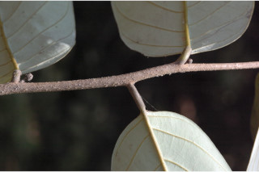
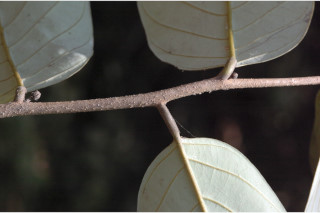
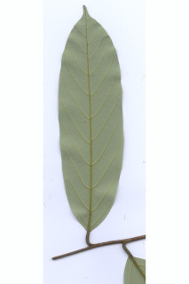
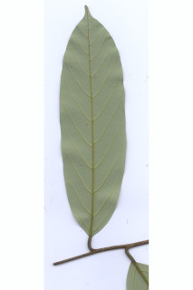

Images :
 


 



| Habit : | Trees up to 25 m tall. |
| Leaves : | Leaves simple , alternate , distichous ; petiole 0.8-1.5 cm long, canaliculate above, subglabrous ; lamina 8-25 x 3-11 cm, oblong sometimes elliptic-oblong , apex shortly acuminate with blunt tip, base rounded or acute , margin entire , coriaceous , glabrous , glaucous beneath; midrib canaliculate above; secondary_nerves 7-13 pairs, prominent, nearly parallel to margin; tertiary_nerves distantly percurrent , slender; higher order nerves finely reticulate . |
| Inflorescence / Flower : | Flowers in axillary or terminal lax panicle . |
| Fruit and Seed : | Drupaceous , globose , smooth, 1.5 cm across; seed 1. |